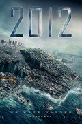

2012
Roland Emmerich delivers another large-scale disaster picture with 2012, a Sony Pictures Entertainment production detailing the year when many ancient scribes predicted that the world would end, with John Cusack, Chiwetel Ejiofor, Danny Glover, Amanda Peet, Thandie Newton, and Oliver Platt filling out the cast. The director co-wrote the script with his 10,000 B.C. writer/composer Harald Kloser.